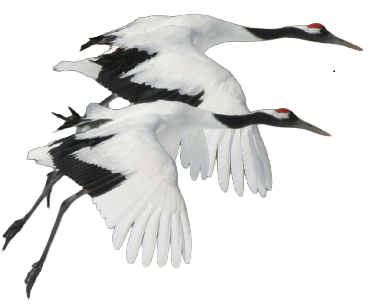
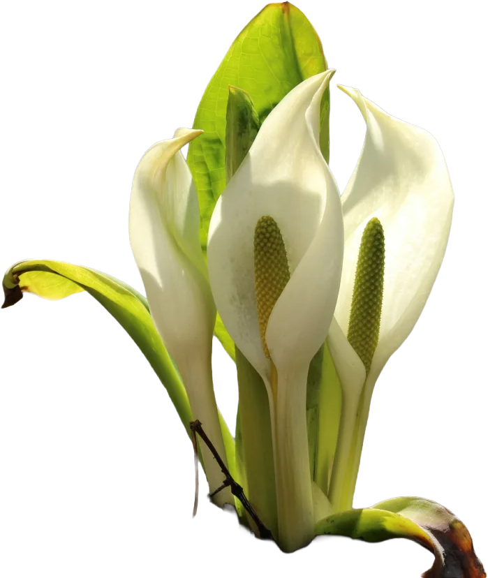
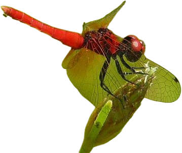
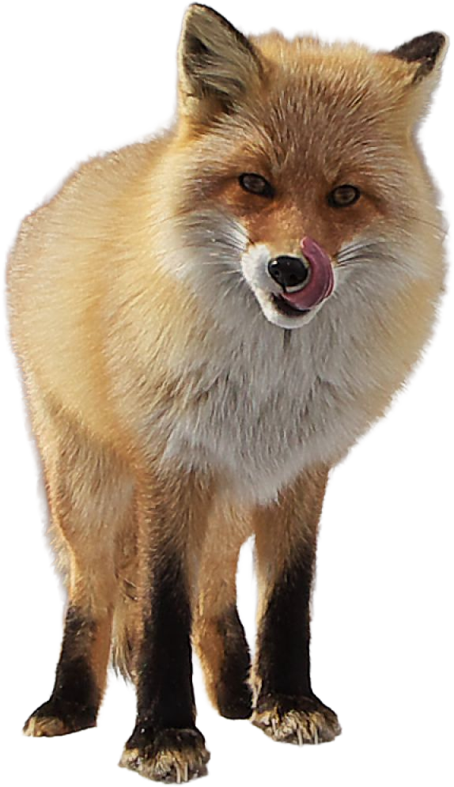
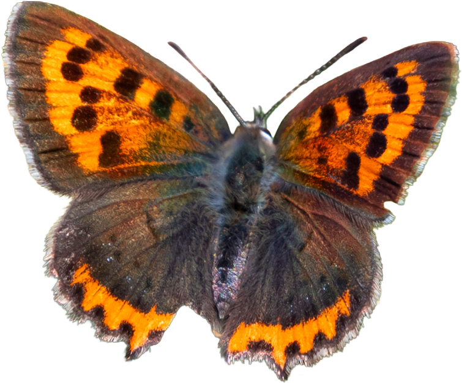
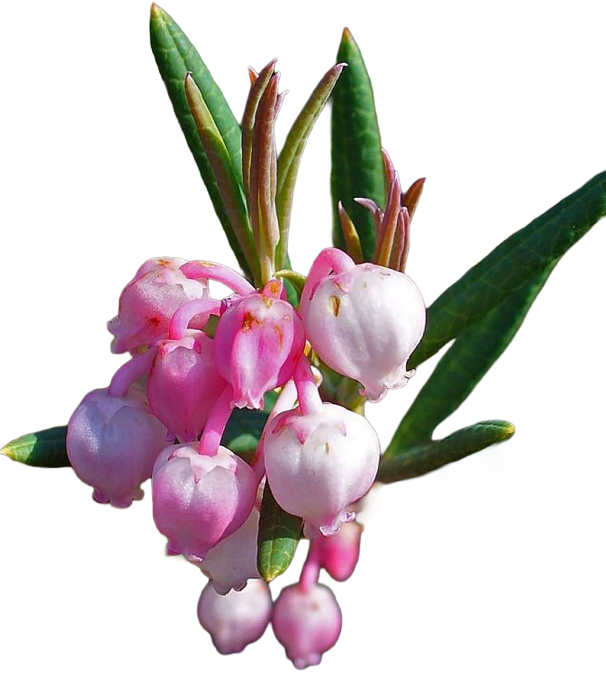
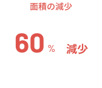
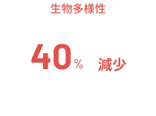

湿原の
が消える前に
Before the “PLANTS” and “ANIMALS” of the wetlands vanish,

タンチョウ

ミズバショウ

ベニシジミ

キタキツネ

ベニシジミ

ヒメシャクナゲ
静寂に包まれた湿原は、生命の宝庫。
水を浄化し、多様な生き物を育む、かけがえのない場所。
日本の湿原を残そう。
SAVE THE JAPANESE WETLANDS.
ABOUT WETLANDS
湿原という場所
湿原は、ただの湿った土地ではありません。
地球と私たちの未来を支える、大切な存在です。
日本の代表的な湿原

釧路湿原
Kushiro wetland
日本最大の湿原。タンチョウの生息地として世界的に有名。
ヨシやスゲ類が広がる低層湿原で、多様な動植物が生息。
直面する危機



THE FOUR SEASONS OF WETLANDS
湿原の四季
湿原は、ただの湿った土地ではありません。
地球と私たちの未来を支える、大切な存在です。
春
AUTUMN
目覚めの季節
もっと見る
夏
SUMMER
生命の輝き
もっと見る
秋
FALL
黄金の季節
もっと見る
冬
WINTER
静寂の世界
もっと見る
WETLANDS LIFE
湿原の命
タンチョウ
Red-crowned Crane
SEE MORE
EXPLORE